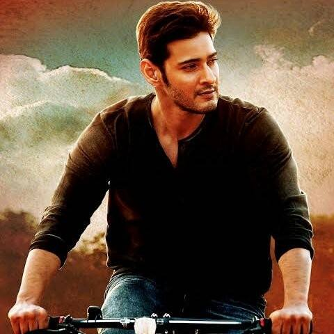
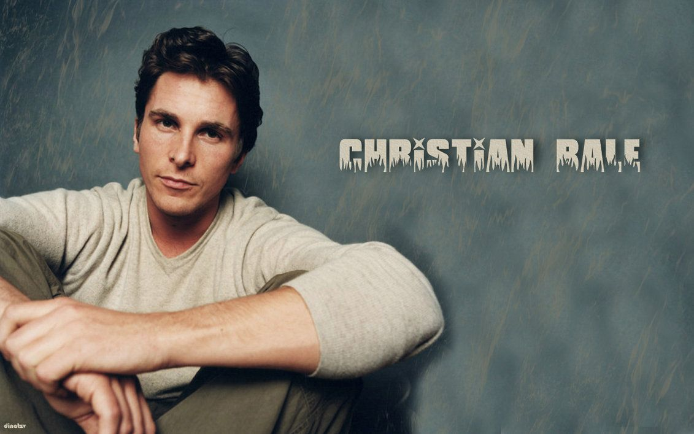
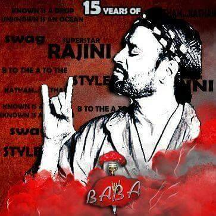
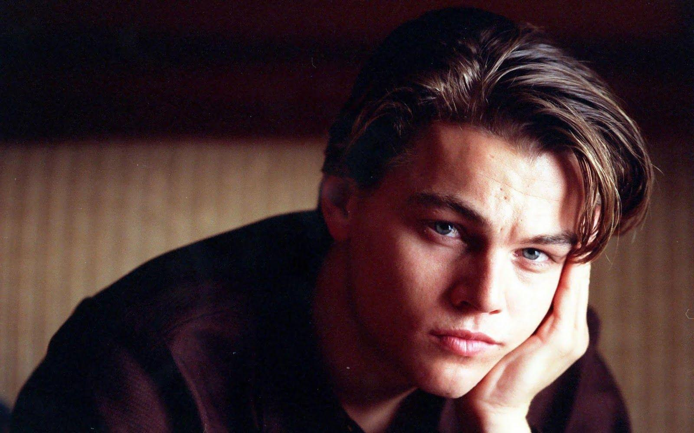
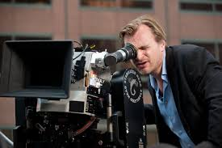

My favorites
Movies
I have always been a great movie lover.I love watching movies in my free time.

I watch movies of all different generes.I dont fix to a particular genre.But my personal favourite among them in fantasy and thriller genre
Web series
After completing my intermediate studies I started watching web series.
It is the best way to pass the time and at the same time these are very thrilling and interesting.My personal favorite web series is "Sherlock"

Anime
I recently started watching Anime.I started watching anime with "Death Note"

My Favorite Movie stars and Directors
I am telugu guy and in telugu movies I like "Mahesh babu" the most.In bollywood I "Shahrukh khan" the most and in tamil I like "Rajnikanth"
and in Hollywood I like "Christian bale","Robert Downey Junior" and "Leonardo dicaprio" the most.
And my favorite director is christopher Nolan





Music

I believe the best way to keep my mind fresh and activated is by listening music.
I do listen to music a lot
I listen to a variety of music.I listen to telugu,hindi,kannada,tamil and malayalam songs.I even just listen to music,I even enjoy
listening to beethoven's work.I love listening to Shankar Mahadevan,SPB,Charlie puth,Atif Aslam and Arijit Singh